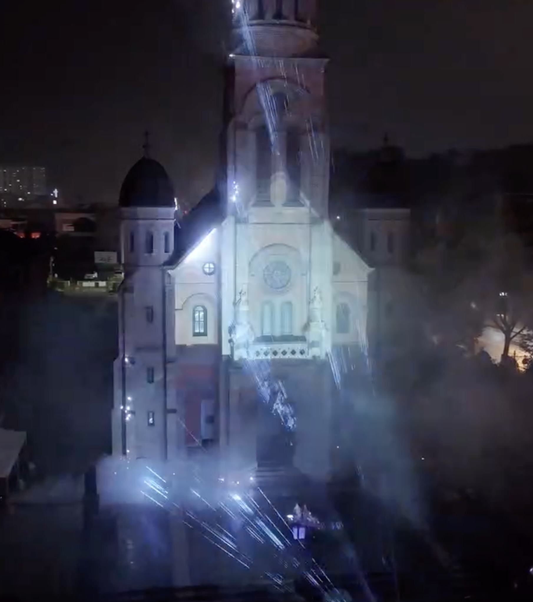
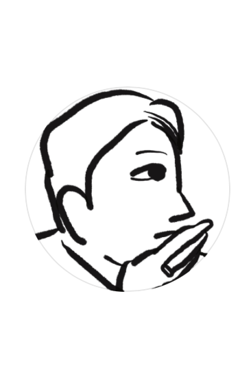

유 한
Media Art
New Media Art
2025
빛과 소리, 색, 형상은 어디서 시작되고 어디서 끝나는가?
점, 선, 면의 불완전함이란 무엇이며, 완전함이란 무엇인가?
우리는 언제나 새로운 출발점을 넘어 목적지를 향해 나아가며 살아간다.
처음처럼 보이는 것 속에도 과정이 깃들어 있고, 그 과정 자체가 또 다른 시작이 된다.
《점선면선점》은 시작과 과정, 끝이 또 다른 시작으로 이어지는 순환적 서사를 탐구하는 시청각 작업이다.
‘점, 선, 면’이라는 기본적인 형태들을 통해 우리는 언제나 새로운 출발점에 서고,
끝을 향해 도달했다가 다시 시작하는 연속적인 흐름을 시각적으로 경험하게 된다.
빛, 소리, 색, 형상은 본래 시작과 끝을 함께 품고 있다.
그것들은 공간 속에서 선과 면으로 변모하며, 우리에게 다양한 이야기를 전달한다.
출발점이 종착점을 만날 때 하나의 선이 생기고, 시작선이 도착선을 만날 때 하나의 면이 형성된다.
그 순환적인 과정 속에서 우리는 끊임없이 앞으로 나아간다.
그는 빛과 그림자라는 덧없는 매체를 통해 물리적 공간을 새롭게 구축하고,
몸과 인식이 다시 조율되는 순간들을 만들어낸다.
그의 공간은 무형과 유형이 교차하는 지점에 존재하며,
익숙한 인식을 해체하고 순수한 감각적 몰입을 이끈다.
그것은 휴식과 몰입이 흐려지고, 무구함과 현실이 포개지는 확장된 존재의 성소이다.
